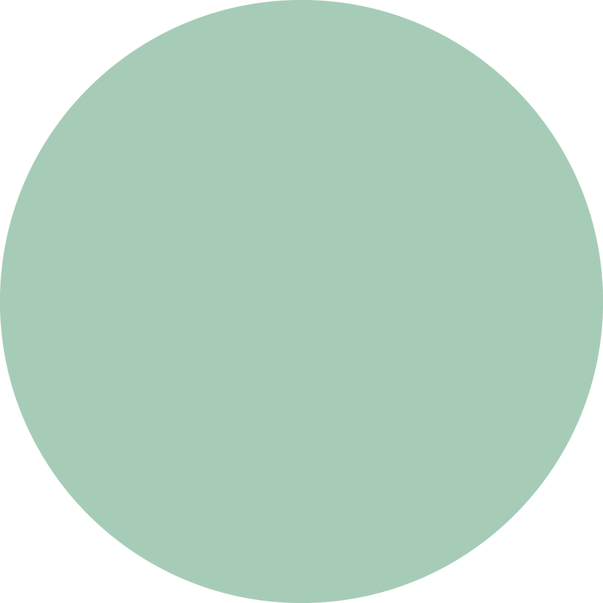
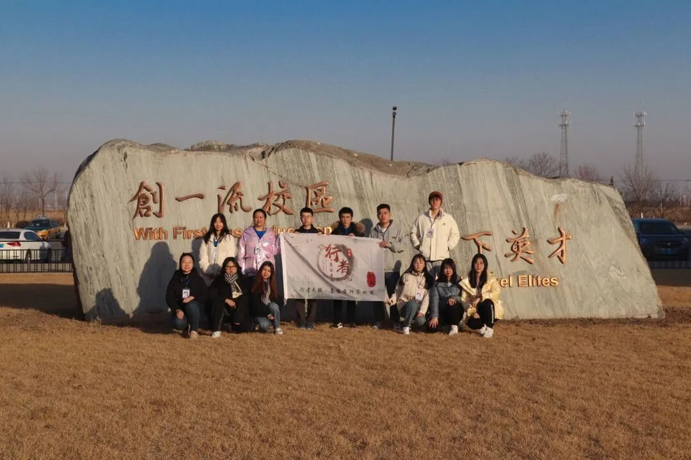

行者驰千里，思域扩无疆
行者无疆
自从上了大学开始，我有了去旅行的想法。世界很大，人生有限，生命不应当局限在周遭。尽管从小到大的生活都集中在东北地区，很少有出去的机会，我却从没有停止过对更远些的地方的向往。蜷缩在小天地也应当想拥抱全世界，怀着这样的想法，我参加了第十期的行者无疆。
这次的主题是对三种地域文化进行求同存异的调研，目标定在江苏、河南和甘肃。华夏大地幅员辽阔，各地风光各有不同，积淀出不同的文化果实。

1.
江苏气候温暖湿润，地势平坦辽阔。这里河渠纵横，水网稠密，作为水运发达的地区，经济富足，鱼肥米香，人们的生活简约又精致。河流创造了文化交融的机遇，北边的剪纸、南边的园林、西边的面食，多样的文化产品在此集中，并在时间中沉淀出淮扬的独特滋味。
Daily Life
2.
河南地处中原地带，是中华文明的发祥地，地势多样，四季分明，土壤肥沃。广阔的黄土地上，培育出对土地最原始的爱；流淌了千年的黄河边，滋养出勤劳垦实的民族。中原文化是中华传统文化的主干和根源，保存着大量文物的同时，也记录了这片土地上的人们的发展脚印。
Daily Life
3.
甘肃地处三片高原的交界地带，重峦叠嶂，山高谷深，地形复杂。作为河西走廊的重要枢纽，自古以来就是通往西域的要道。这里连接着不同地域的贸易和文化交流，东西方文化在此激情碰撞，积淀下壮观的历史文明。文物品类丰富，风景奇特瑰丽，极大丰富了中华历史文明的纵深。

行者要突破地域的限制，更要突破思想的禁锢，自由探索。探寻不同地域文化的过程，既是丰富见闻，感受民族历史，又是追根溯源，提升思想境界。浮躁的时代需要沉淀，我们最是年轻，我们还需要继续脚步。
来源 | 行者无疆实践团
文字 | 徐彦博
排版 | 高懿玢
审核 | 温兆琪 朱华玮